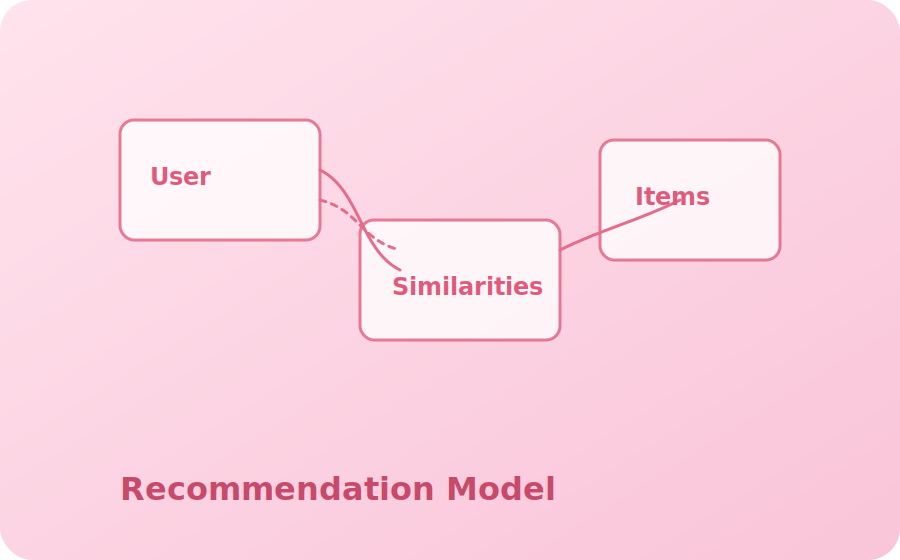

Recommendation Model
A lightweight collaborative filtering experiment that explores recommendation strategies with Python and tidy datasets.
About this project
This experiment focuses on collaborative filtering techniques with a small dataset. I explored similarity metrics and the tradeoffs of user-based vs item-based recommendations. The research notes document steps taken and sample evaluations.
Highlights
- Explored similarity measures and evaluation techniques
- Experimented with fallback strategies for cold-start items
- Lightweight, reproducible Python scripts for demo
Tools & Libraries: Python, Pandas, scikit-learn